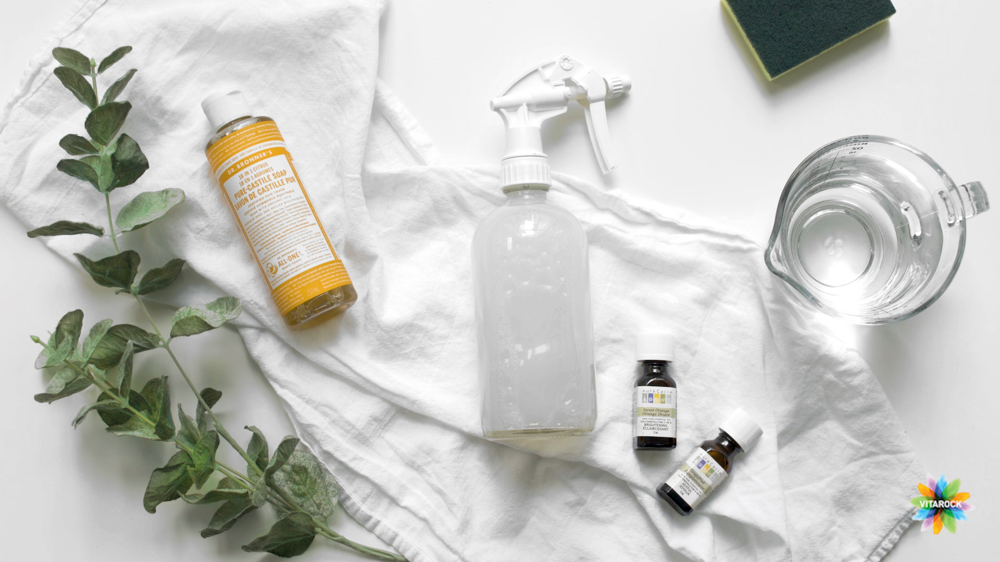

1 / 4

Parfumuri de casa
2 / 4

Traieste cu natura
3 / 4

Parfumuri naturale
4 / 4

Fortificati organizmul
Eficienta pana la ultima planta
Medicamentele naturiste sunt chiar mai eficiente decat cele alopate sau cele farmaceutice. Ele actioneaza pentru o gama foarte larga de afectiuni, dar contribuie si la functionarea normala a organismului.
Mai mult de atat, starea generala de bine si rezistenta organismului sunt imbunatatite vizibil, deoarece plantele si ciupercile naturale, aflate in compozitia acestor medicamente, sunt benefice pentru un spectru larg de simptome.
Natura e cel mai bun medic
Tratamentele naturiste sunt considerate ca fiind suta la suta naturale. Exista momente, totusi, in care la crearea acestora se intervine cu alte ingrediente. Intr-o lume in care compusii chimici ne ataca din toate partile, prin aproape toate alimentele pe care le consumam, un medicament realizat numai din plante devine o adevarata mina de aur!
Tratamentul potrivit la momentul potrivit
Desi tratamentele naturiste actioneaza pentru un numar mare de afectiuni, administrarea lor trebuie supravegheata.
Tocmai pentru ca sunt naturale, ele prezinta un risc ridicat de a provoca alergii, iar in acest caz pacientul trebuie sa fie foarte atent inainte de a consuma produsele.
De asemenea, tratamentele naturiste necesita administrarea pentru o perioada indelungata, iar acest lucru ar putea ridica probleme unora dintre consumatori.